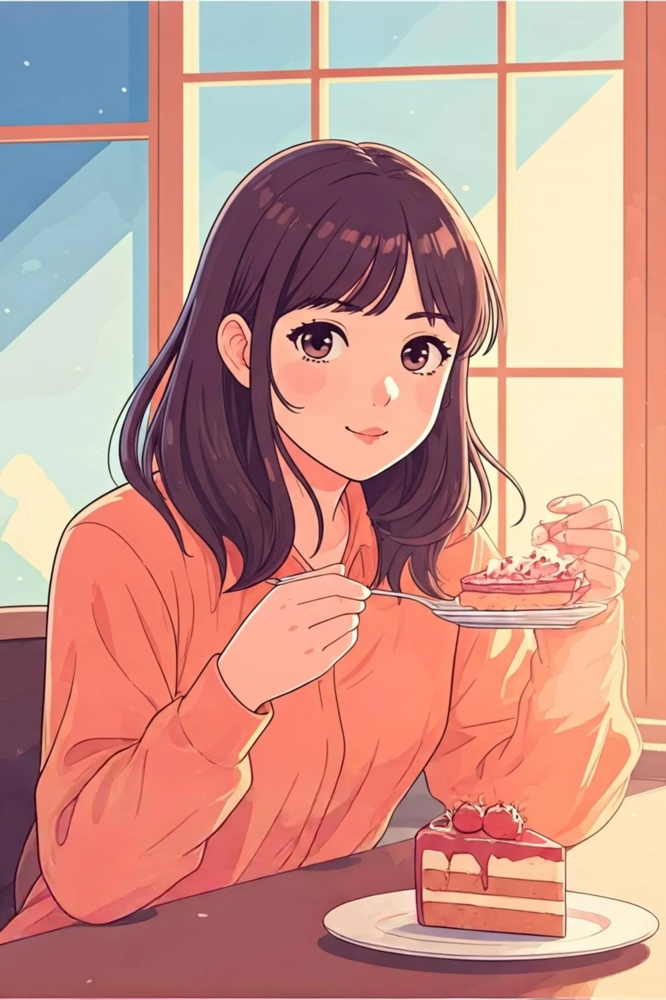
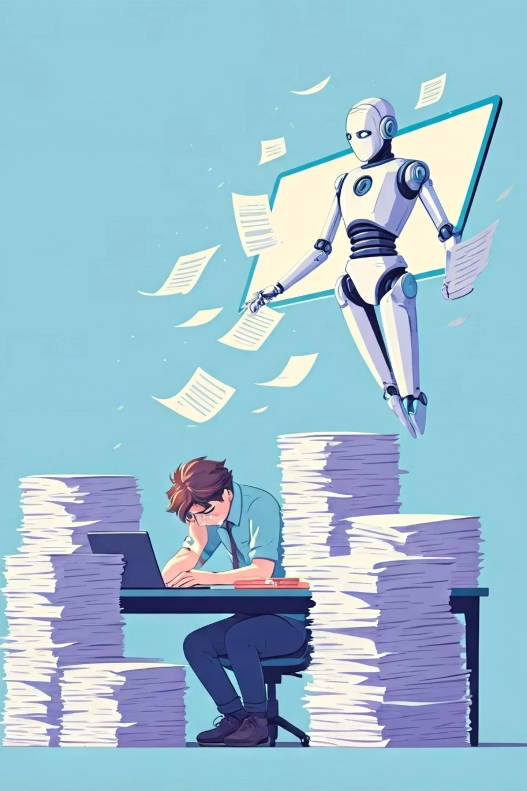
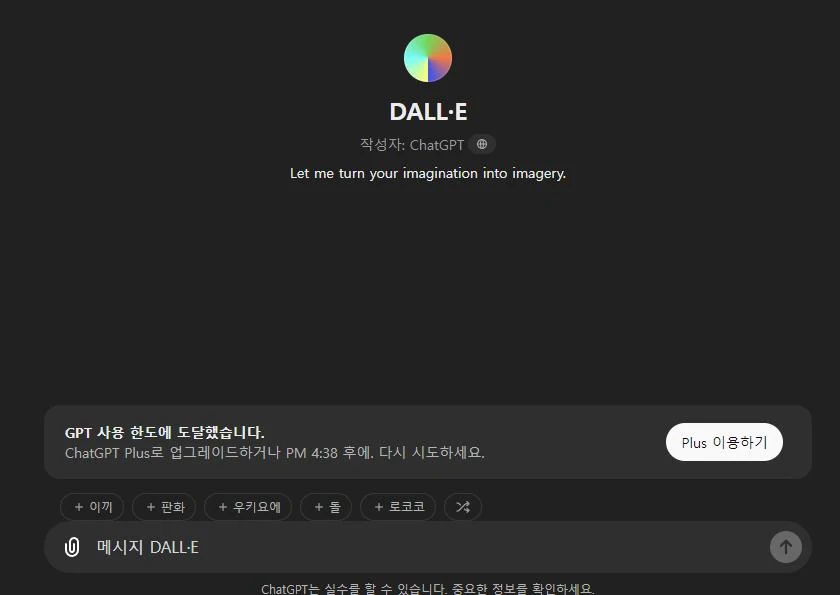
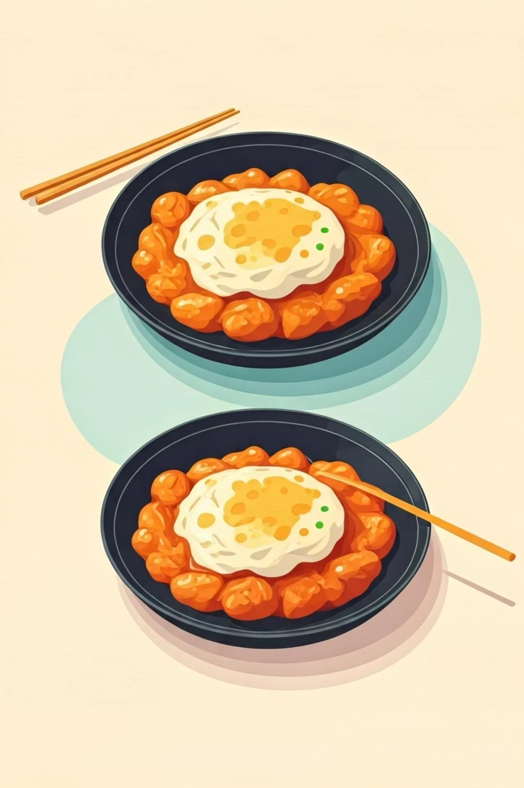
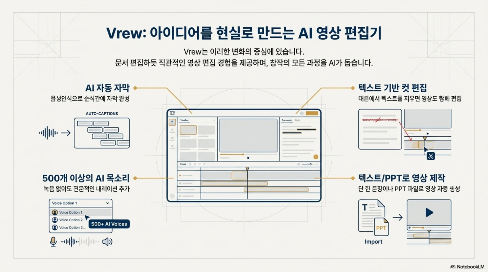

EDUCATION ARCHIVE / 2025
기획한 이야기를
영상으로 만드는 과정
ChatGPT로 시나리오를 만들고, Sora로 장면을 준비하고, Vrew에서 자막과 영상을 편집한 2025년 8월 교육 기록.
도구 세 개를 배우는 데서
하나의 제작 과정으로
ChatGPT로 이야기의 뼈대를 정하고, Sora로 이미지와 영상 소재를 만들고, Vrew에서 자막·장면·음악을 편집했습니다. 마크로젠 DX 크리에이터 기초 과정은 기획과 제작을 연결한 콘텐츠 실습입니다.

- 실제 운영
- 2025.08.18–08.22
- 현장 교육
- 8월 18~19일 · 마크로젠
- 온라인 실습
- 8월 20~22일 · 10:00~17:00
현장 교육 2일과 온라인 실습 3일을 함께 정리했습니다. 이미지는 원본 교안의 제작 예제와 도구 화면이며, 수업 이후의 보충 자료는 캡션에 구분했습니다.
STEP 01 / PLAN
누구에게 무엇을 전할지 정하기
ChatGPT · 브랜드 키워드 · 페르소나 · 콘텐츠 시나리오
AI에게 영상을 요청하기 전에 전하려는 메시지와 대상을 정했습니다. 온라인 커리큘럼은 생성형 AI·LLM 기본, ChatGPT 조작, 브랜딩 전략, 페르소나와 콘텐츠 시나리오 순서로 구성되어 있습니다.
교육 자료의 광고 예제는 가게 정보에서 가치를 추출한 뒤 메인카피·서브카피·행동을 요청하는 문구(CTA)로 나누는 흐름을 보여 줍니다. 같은 소재도 고객과 목적에 따라 어떤 이야기를 앞세울지 달라진다는 점을 다루는 예제입니다.

크게 보기 ↗「1. DX_OT」 11쪽의 교육용 일러스트. 사람과 AI의 작업 분담을 설명하는 자료이며 현장 사진은 아닙니다.

크게 보기 ↗「4. GPT 활용」 14쪽의 원본 도구 화면. 교안에 수록된 당시 UI입니다.
수업에서 한 일
ChatGPT 기능 실습, 브랜드 키워드 도출, 대상과 페르소나 작성, 시나리오 발표·피드백.
만들어 갈 것
장면으로 바꿀 수 있는 이야기의 순서와 각 장면에서 전달할 핵심 메시지.
STEP 02 / VISUALIZE
글로 정한 장면을 이미지로 바꾸기
Sora · 참조 이미지 · 프롬프트 수정 · 4컷 만화
이미지 생성의 기본 개념을 설명한 뒤 Sora 프롬프트를 작성하고 결과를 분석·수정했습니다. 원하는 장면의 대상과 구도를 설명하고, 참조 이미지를 이용해 변형하는 실습입니다. 온라인 커리큘럼에는 15초 광고 영상 프롬프트, 이미지 수정과 4컷 만화도 포함되어 있습니다.
광고 교안은 카페 장면과 음식 클로즈업 사례를 제시합니다. 배경과 주인공, 가까이 보여 줄 대상을 구체적으로 정하고, 생성 이미지에서 필요한 요소를 골라 후속 콘텐츠에 사용하는 흐름입니다.
「5. AI_gpt 광고」 6쪽의 원본 이미지. 실습의 시각 자료이며 교육생 완성작으로 소개하지 않습니다.

크게 보기 ↗같은 교안 7쪽의 음식 이미지 예제. 대상·구도·표현을 바꾸는 프롬프트 설명에 사용된 자료.
- 장면의 목적 정하기
- 프롬프트 작성
- 참조·결과 비교
- 수정하고 장면 연결
실습의 핵심
한 번 생성한 결과를 그대로 채택하기보다, 기획과 맞는지 비교하면서 요청을 고치는 과정.
다음 단계와의 연결
이렇게 준비한 이미지와 생성 영상이 Vrew에서 배열하고 편집할 소재가 됩니다.
STEP 03 / EDIT
Vrew에서 자막·클립·소리를 맞추기
기본 조작 · 숏폼 제작 · 자동 자막 · 배경음악
Sora 영상 생성과 GPT를 활용한 영상 프롬프트 실습 뒤 Vrew의 기본 조작을 익혔습니다. 개인 주제의 AI 숏폼을 만들고, 긴 영상에서 자막을 변경하거나 클립과 배경음악을 추가하는 기능까지 다뤘습니다.
촬영물에 자동 자막을 생성하고 수정하는 실습도 포함되어 있습니다. 결과물을 만드는 마지막 단계에서 문장의 흐름, 장면 순서와 자막 내용을 직접 손보는 작업입니다.

크게 보기 ↗보충 자료 「vrew.pdf」 3쪽. 원본 자료에 수록된 기능 설명 화면입니다. 수업 이후 작성 내용이 포함된 자료이므로 2025년 당시 화면이나 수강생 결과물로 제시하지 않습니다.
- 영상·이미지 소재 준비
- 클립 추가·순서 조정
- 자동 자막 생성·수정
- 배경음악과 최종 편집
온라인 시간표에 남은 실습
Vrew 기본 조작 → 개인 주제 숏폼 → 긴 영상·자막·클립·배경음악 → 촬영물 자동 자막·최종 프로젝트.
주간 업무일지의 기록
8월 20일 숏폼 제작 강의, 21일 심화 교육, 22일 과정 완료와 과제 검토.
STEP 04 / PRACTICE
자신의 업무와 관심사로 주제 정하기
기업 홍보 · 신입사원 이야기 · 정보 전달형 숏폼
수업 공유 자료에는 회사 홍보와 신입사원 에피소드 같은 업무 주제와, 직장인 점심값·도서 추천·운동·여행·맛집 정보 같은 생활 주제가 함께 남아 있습니다. 사용법을 배운 뒤 “무슨 이야기를 만들 것인가”를 각자의 맥락에서 고른 것입니다.
| 주제 방향 | 공유 자료에 남은 예시 | 제작에서 생각할 점 |
|---|---|---|
| 회사·업무 | 회사 홍보, 신입사원 에피소드 | 전하려는 메시지와 보는 사람 |
| 생활 정보 | 점심값, 주변 맛집, 도서 추천 | 짧은 시간에 전달할 정보의 우선순위 |
| 취미·관심사 | 여행, 운동 자세, 스포츠 요약 | 설명을 돕는 장면과 자막의 순서 |
표의 주제는 수업 중 제안된 항목입니다. 주제를 제출했다는 기록과 영상 완성을 같은 성과로 보지 않고, 확인된 과제 검토 기록까지 소개했습니다.
무엇을 만들고 왜 수정하는지 이해하기
기획과 생성, 편집을 따로 익히는 대신 하나의 주제로 연결했습니다. 목적에 맞는 표현을 고르고, 생성 결과를 검토하고, 자막과 장면을 수정하는 과정이 이 수업의 중심입니다.
자료와 기록
8월 18~22일 주간 업무일지, 온라인 시간별 커리큘럼, DX OT·GPT 활용·광고 교안과 수업 공유 자료를 대조했습니다. Vrew 기능 화면은 후속 보충 자료에서 가져왔으며 이미지 캡션에 구분했습니다. 전체 과정의 총시수는 제안서 내 표기가 서로 달라 확정하지 않았습니다.
당시 바인드소프트 소속 최수길의 강의·프로젝트 지도 경험을 정리한 기록입니다.